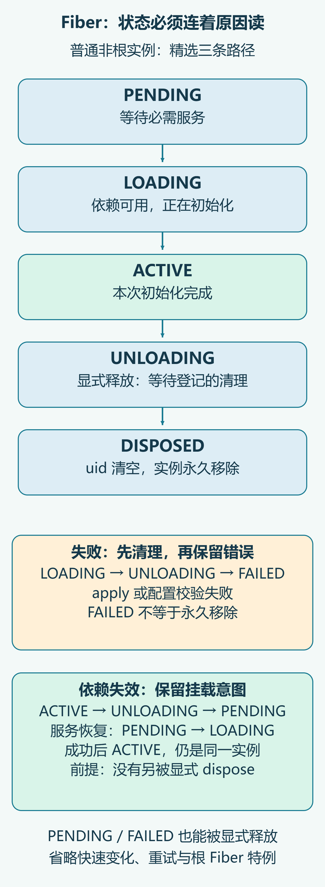
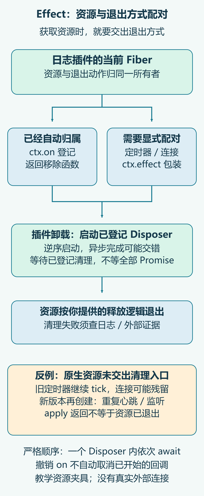
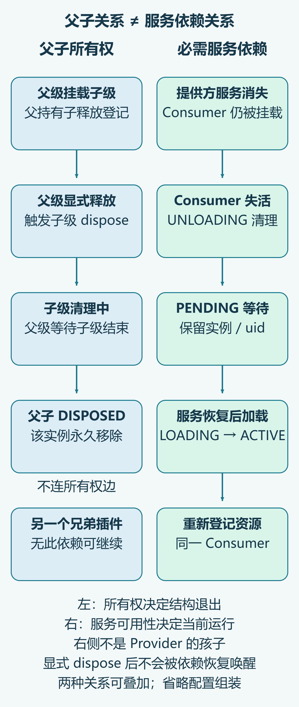

H07 作者审阅页 · 未发布。实际 LessonMarkdown 的静态渲染，折叠答案可展开；课程版本的复制交互已另经 React 挂载测试。图片在本页映射为相邻文件，不改变教材的 /course-media 路径。
插件生命周期：Fiber、Effect 与资源管理
125～165 分钟（分三段；实际学习时长待试读，环境准备另计）
日志插件卸载了，为什么还在输出？
H05把项目助手的能力拆成插件，H06让日志、策略和统计参与同一次工具动作。现在我们修改日志插件：除了监听事件，它还每隔一段时间输出状态，并向外部连接发送记录。调试时卸载旧插件，再装入新版本，终端却出现两份心跳，连接数也增加了。
问题可能出在这段普通JavaScript教学反例。它没有使用Cordis；socket是预先提供的连接，示例不建立真实网络连接：
function startLogger(bus, socket) {
bus.on('status', data => socket.send(data));
setInterval(() => socket.send('heartbeat'), 1000);
}函数早已返回，但监听器和定时器还被系统保存着。删除一条“日志插件已安装”的记录，并不会知道该取消哪个定时器、移除哪个函数、关闭哪条连接。再调用一次startLogger，又会创建一套。资源泄漏在这里指不再需要的资源仍被保留；重复监听会让一次动作记录两次；所谓僵尸任务，是所属功能已经撤掉、工作却还在继续，不是操作系统僵尸进程的严格定义。
卸载一个插件，也不等于应用进程退出。项目助手仍需要工具和会话能力，其他插件可能继续工作。用process.exit结束全部程序不能代替对一个插件的正确清理。
本课只追一件事：资源什么时候创建，归谁持有，怎样释放，以及调用方等到了什么。 需要连接的不只是功能，还包括每项功能的退出方式。
六分钟复习：函数结束不等于资源结束
H05的Plugin是宿主挂载的贡献，Service是具名能力，Context是当前插件访问能力和登记行为的入口，inject声明必需服务。H06的ctx.on把真实回调登记到事件系统；类型声明本身不会登记它。我们沿用这些含义，不把Context当成无条件全局变量。
Stage 2 2.7排查Loading时提到finally和请求归属；Stage 3 3.3解释取消后仍可能有迟到响应。Stage 4把Tool Registry与Runtime、执行权与模型提议分开，但没有系统讲Cordis的资源所有权。4.7甚至明确不要求学员手写try/finally。因此这里补足必要语法，不假设读者已经学过完整生命周期课程。
定时器把回调交给时间系统，setInterval返回一个可用于取消的句柄；clearInterval阻止后续触发，但不会自动撤销回调已经做过的事。Promise表示一个可能尚未完成的结果，await只等待接到的那份结果；没有接住正在执行的工作，就不会自动等它结束。
获取与释放要配对。比如获取连接后，try里的处理无论成功还是失败，都可以在finally尝试关闭：
const connection = await openFixtureConnection();
try { await useFixtureConnection(connection); }
finally { await connection.close(); }这也是结构示例，不是Cordis API。finally保证控制流到这里时会尝试清理，不保证close一定成功；close抛错仍需处理。资源若要陪插件运行很久，apply返回时通常还不能关闭它，需要把关闭动作交给插件的生命周期管理者。
想深入再看：语法补课：回调、闭包与清理函数
const timer = setInterval(callback, 1000)登记回调；return () => clearInterval(timer)返回另一个函数，保存着timer变量。后者此刻还没有运行，这种保留外部变量的函数称为闭包。
async () => { await close(); }调用后返回Promise，只有等待它，才能知道这次关闭已经结束或失败。return close()可以把结果往上传，close()后不return则可能丢掉等待边界。try/finally处理控制流，不会自动发现函数之外所有定时器、连接或异步任务。
回顾只为理解下面的注册与释放。旧课链接沿用原权限，不打开旧课也能继续；旧登录Session、Run/Step和审批Token不能直接当作Harness同名机制。
先分清定义、实例与管理句柄
const logger = { apply(ctx) { ... } }是插件定义：描述应该做什么。一次ctx.plugin(logger)请求挂载，形成这次应用的运行实例；同一定义可以挂载两次，各有状态和资源，不能拿定义上的一个布尔值代表所有实例。
Fiber是Cordis管理一次插件应用的运行对象。 它保存状态、该实例的Context、依赖快照、配置和清理记录。可以把它理解为“一次租用的管理账本”，但账本不只是静态记录：源码还用它推动加载和卸载。Fiber不是操作系统线程，不意味着新进程，也不是JavaScript同时多线程运行的凭证。字段见fiber.ts 184–210行。
Context是这次插件工作的入口，Fiber是管理这次应用的对象。创建实例时，Cordis从父Context扩展子Context并设置fiber；fiber.ctx指向插件所在的Context，插件里的ctx.fiber指回它。关联在234–245行。这不是给插件复制一套整个应用，也不代表所有服务都无条件可见。
ctx.plugin返回可等待的Fiber句柄，公开类型是 Fiber & PromiseLike<Fiber>。 不要说成只返回Promise或返回Service实例。实现会创建Fiber，再返回继承它的包装对象，包装对象的then委托给fiber.await。RegistryService.plugin在316–335行。
const handle = ctx.plugin(loggerPlugin);
console.log(handle.state); // 可以观察正在变化的状态。
const fiber = await handle; // 等待当前转换稳定；可能仍为PENDING。
await handle.dispose(); // 保留并等待首次清理结果。这里ctx和loggerPlugin是说明用的既有对象；完整可运行程序在实践A。await句柄不会凭空提供缺失服务。H05已经见过PENDING；现在继续追踪它的后续变化。fiber.await的731–736行只等待当前inertia，并重抛保留的启动错误，不承诺每个句柄都变成ACTIVE。
想深入再看：核对：同一定义挂两次，是两个进程吗？
不是。两个实例可以在同一进程里，共享同一插件定义的runtime记录，但有不同Fiber、uid和Context。处置其中一个不自动处置另一个。测试核对两个句柄、实际Fiber、runtime及独立状态，而不是只比较名字。
可等待包装对象与await后取得的实际Fiber不必对象恒等；本课按state、uid与ctx.fiber判断实例。不要把“同名”当“同一个”，也不要用Promise对象的身份推导资源所有权。
六种状态，要放回具体场景
日志插件依赖日志传输服务。没有提供方时，挂载意图存在，但apply还不能运行；有提供方后，初始化可能等待；初始化完成后才开始工作；卸载时又要等待关闭连接。这些阶段就是Lifecycle（生命周期）：从一次应用被建立，到运行、失效和退出的可观察过程。
FiberState真实枚举在147–154行。下面是普通非根插件的主要场景；不是完整状态机，也不表示每次挂载一定经过每条箭头。
| 状态 | 日志插件此时怎样 | 为什么会进入、接下来可能怎样 |
|---|---|---|
| PENDING | 必需传输服务缺失，apply尚未启动 | 等依赖可用后LOADING；也可直接显式释放，不必先成功加载 |
| LOADING | apply正在初始化，例如等连接夹具准备好 | 成功且本次加载仍有效才ACTIVE；失败或加载被失效会转入清理 |
| ACTIVE | 这次初始化已完成，登记处于工作阶段 | 服务变化、restart或显式dispose可引发UNLOADING；不保证永不出业务错误 |
| UNLOADING | 正在撤销登记、等待已登记的清理 | 清理结束后按原因转PENDING、FAILED、DISPOSED，或重新LOADING |
| FAILED | 启动或配置校验失败，已走清理，保留错误 | await会重抛启动错误；它不是缺服务的正常等待，也不是永久释放完成 |
| DISPOSED | 此非根实例被永久移除，uid为null | 不能靠服务恢复唤醒；若要重新挂载，需新的ctx.plugin调用 |
图一把正常、失败和依赖失效三条精选路径分开，先看“为什么离开运行态”，再看清理结束去哪儿。

这里最容易错的是FAILED。实现捕获启动错误后记录它、令本次加载失效，再进入UNLOADING；资源清理完，_getState()才按uid、错误和激活信息决定稳定状态。673–723行与574–594行共同说明：不能把图简写成“apply抛错直接FAILED、已有资源不管了”。
显式dispose另有一步：把uid置为null、移除该实例的注册关系，再等卸载转换结束。265–297行还照顾尚未激活的PENDING实例。加载失败保留错误与实例，显式释放永久移除实例，是不同的问题。
Effect：把获取与退出方式交给同一个所有者
先补好普通JavaScript反例。手动版应保存回调、定时器与连接，返回一个关闭函数；调用方还要记住什么时候调用它：
function mountLogger(bus, connection) { // 普通JS结构示例。
const listener = data => connection.send(data);
bus.on('status', listener);
const timer = setInterval(() => connection.send('heartbeat'), 1000);
let closing;
return () => closing ??= (async () => {
clearInterval(timer);
bus.off('status', listener);
await connection.close();
})();
}这个版本至少交出了清理入口，并记住同一份关闭任务，调用者却仍要建立“此退出动作属于哪个插件”的关系。Cordis的Effect解决这项连接：在当前Fiber名下立即执行获取逻辑，收集它交出的清理函数，并在主动清理或所属插件卸载时执行。 日常说的副作用是改变外部状态；Cordis的Effect是特定的、带清理归属的机制，不能把所有JavaScript副作用都当作已经登记。
Disposer就是释放资源的函数。例如取消一个定时器、解除监听、关闭一条连接。ctx.effect(execute, label?)里的execute立即运行；最常用写法是execute返回Disposer。返回的是函数，而不是先调用关闭函数得到的结果。 effect入口415–442行会检查当前Fiber、准备清理集合，并建立调用包装。
ctx.effect(() => {
const timer = setInterval(() => reportStatus(), 1000);
return () => clearInterval(timer);
}, 'heartbeat');这仍是抽取出的使用形状：ctx来自插件，reportStatus是你的状态输出函数。输入是获取逻辑和可选诊断标签；行为是创建定时器并登记对应清理；结果是可主动撤销的句柄。注册错所有者，即使清理函数本身正确，也会在错误时间释放。插件里应使用宿主交给它的Context，不能随手借根Context把本该短命的资源变成应用级资源。
实现517–560行先让所属Fiber看见Effect包装，再执行用户的获取逻辑，处理异步准备和清理。无需背内部变量；读到这里要确认“登记归属”与“执行获取”都存在，而非只有一份无关的回调列表。
想深入再看：返回的Disposer为什么需要闭包？
获取时才知道timer、连接或订阅句柄。Disposer通过闭包记住准确对象，卸载时不必猜“最后一个定时器”是哪一个。同一插件定义挂两次，各次闭包保存各自句柄，清理其中一次不会误取消另一份。
label用于getEffects等诊断，名字不是资源锁，也不会自行保证线程安全、关闭成功或数据库回滚。框架能调用你交出的关闭逻辑，不能替你发明未知资源的释放协议。
哪些已经登记，哪些还要自己配对？
H06的ctx.on()已经走这条路。EventsService.register的254–259行把添加监听器包成fiber.effect，返回移除监听器的函数。因此普通on不用为了自动卸载再套一层相同包装。ctx.plugin挂子插件、运行时provide服务也有自己的Effect归属。
原生setInterval、外部库的订阅、连接、watcher不会因为在apply里调用就自动登记。它们需要明确的ctx.effect与正确Disposer。一个库如果已经提供close，仍要把close接到当前Fiber；有关闭方法不等于已经安排了关闭时机。
图二沿同一份日志资源看“有没有交清理入口”，不是画apply返回就立即关闭。

重复调用不等于重复等待
最外层Effect清理句柄具有一次性行为：第一次撤销后，再调用不会重复释放。它避免两次取消同一订阅，但不要推导成每次调用都会返回同一份正在进行的Promise。本版本504–515行在公共包装已失效后通常直接返回undefined；结构所有者另通过effectInertia加入在途清理。
因此需要等待时，保存并等待首次调用的结果：const closing = stop(); await closing;。不要第一次只调用stop，随后靠await stop()假定已等到前一次关闭。测试用门闩保持第一次未结束，确认第二次公共调用已返回，而所属Fiber的卸载仍会等第一次。Fiber.dispose本身也是父级Effect的句柄；普通实例重复dispose也不应被当作可靠的重新加入等待API。
幂等是重复操作不再增加效果的性质；本节具体是包装不重复启动清理，不代表资源库自己的close也幂等。清理逻辑仍要适合其资源协议，尤其失败后是否能重试要明确设计，框架不会自动替你重试。
逆序启动，为什么不保证逆序完成？
假设先登记A“关闭统计连接”，再登记B“写完日志”。你可能期待卸载时B写完，才去关闭A。但两个独立ctx.effect的卸载不是这样串行等待：清理表按逆序取出，再为各项启动异步工作并一起等待。DisposableList.clear的27–30行与Fiber._unload的702–713行共同给出依据。
本课受控实验：B开始，A开始；我们先放行A，所以A完成，再放行B，B完成。逆序启动是这组普通登记的规则，完成顺序是受控门闩制造的观察结果；不能说Cordis保证A先完成。
严格先后要写在一个Disposer内：
ctx.effect(() => {
const connection = createConnectionFixture();
return async () => {
await connection.flush();
await connection.close();
};
});这个结构只有flush成功后才close。若需求是“flush失败也必须尝试close”，应明确用try/finally，并决定如何保留两个错误；不能以失败后跳过关闭为默认策略。异步函数中的顺序await表达真实依赖，而不是靠登记顺序猜完成顺序。
一个Effect还支持生成多个Disposer，其内部组合有自己的串行逻辑，见415–442行；不要把“同一Effect内部”与“整个Fiber的多个独立Effect”混为一谈。正文只用单清理函数，附带测试核了生成器分支，不要求此刻掌握全部Effect形态。
清理出错后，状态能说明多少？
主动调用Effect句柄时，同步清理抛错可以直接抛出；异步清理拒绝要等待并处理。本课两种情况都真实执行了。调用方应按资源协议记录失败和安排补救，不是把重复调用当自动重试。
所属Fiber在卸载时，会对每项已登记清理捕获错误、交给ctx.logger.error，并继续其他独立项。在日志系统正常的本课实验里，Fiber最终DISPOSED，首次dispose正常结束，但错误日志保留下来。DISPOSED表示框架卸载已完成，不证明外部连接一定关闭成功。 如果logger自身抛错，则不能套用“错误全被忽略”的结论；实现注释在287–292行保留了这个失败边界，本课未运行损坏logger的进程级故障实验。
还有更早的失败：资源创建完、尚未返回Disposer就抛错，框架可能根本不知道怎样释放它。应在资源获取失败路径自行回滚，或把每个已成功获取的资源及时纳入可清理结构，不能指望“放进effect回调”就是任何泄漏的保险。
想深入再看：异步获取：先登记所有权，再等待准备
Effect还接受Promise形式的准备结果。本课另测了：在apply中先调用await ctx.effect(async () => { await acquireGate; return () => closeFixture(); })，加载中被dispose，框架等待准备完成后仍释放一次。
相反，先在Effect之外await获取，再尝试登记，可能已经过了所有者的有效时间。显式dispose会把uid置null；继续调用旧Context创建Effect会抛INACTIVE_EFFECT。实验初版曾犯这一顺序错误，已纠正并保留失败记录。不要去掉有效性检查求绿；应设计创建期间的所有权、取消与失败清理。
两种关系：谁拥有我，和我需要谁
父插件内部调用inner.plugin(child)，子Fiber的dispose会登记成父Fiber的Effect。构造器265–297行说明这个所有权连接。父级显式释放，会推动子级释放，并等待子级已登记的异步清理；不是只删父级记录，让子级变成无主任务。
这不承诺“父级的所有其他清理先后严格包住子级”：父级有多个独立Effect时，前述异步重叠仍适用。需要严格顺序的业务资源须组织成明确的一段等待。根下另一个无依赖兄弟插件也不会仅因这个父级卸载而退出。
服务依赖是另一条边。Consumer在inject里写h07Probe，表示本次运行需要该服务；它可以与Provider都是根下兄弟，并不归Provider作为子插件拥有。ReflectService.provide的277–304行在移除服务时通知依赖者；notify的314–327行重新检查对应依赖，不是按名字删一组子节点。
Fiber根据当前可用实现重新计算激活信息；缺必需服务则失效并卸载。597–638行还使用实现所属Fiber的uid区分服务实现。Consumer清理后可以PENDING，保留自己的实例身份；服务恢复后重新执行apply、重新登记监听和资源。
因此“依赖消失导致卸载当前运行”与“显式dispose这个实例”不是同义词。 前者保留挂载意图，可能恢复；后者uid清空并移除实例，不能被新服务自动唤醒。若Consumer同时是某父级的子插件，两个关系可以叠加；父级已将它显式释放后，依赖恢复也救不回旧实例。
图三把两条原因分开。右边Consumer不画成Provider的孩子，才能解释“提供方换了，消费者句柄仍是原来的”。

想深入再看：核对：Provider恢复后，为什么不应出现两份日志？
旧Consumer运行在依赖消失时已卸载，它的on登记和Effect应撤销；恢复时apply重新登记一份。若旧定时器没交给Effect，即使Consumer状态正确，也可能继续输出，新运行再创建一个就重复了。
框架不能替任意外部库猜清理；持续跟踪inject解决服务变化，Effect解决运行资源退出，父子关系解决结构所有权。三个配合，不是三个概念互相替代。Consumer稳定PENDING不是FAILED，也不必变成一个全新Fiber。
回到Harness：退出还可能要等工作静止
H06中的事件监听是一个小入口。真实Harness的工具执行器登记也有退出方式：ToolsService.setExecutor的325–345行用ctx.effect把相关贡献与登记关联。这里认出“获取/登记/释放”即可，不展开整个工具管线。
更长的工作不能只移除监听器。若一个异步回调已经进入、停在await处，撤销on不会自动取消或等待它。实践测试先启动真实parallel监听，再卸载所属插件，回调仍要等它自己的门闩才能退出；第二次分发才不会再选中旧登记。需要资源的后台工作，应有显式停止信号与可等待的收尾任务，而不是默认Cordis追踪了全部Promise。
Quiescence在这里指相关在途工作已退出、不再使用即将释放资源的状态，中文可以说“工作静止”。发送取消信号只是请求停止，drain则是等待相关在途工作或缓冲内容处理完；两者都不等于撤回已经发生的外部写入。Stage 3的迟到响应是已有直觉，但这里新增资源所有者和退出等待。
Harness的AgentHandle有业务级收尾：AgentLoop.initializeAgent的495–546行记住同一份teardown Promise，尝试取消并等machine.whenIdle，再处理scope.dispose、存储handle.close和登记退出，收集失败。这不是通用Effect公共句柄重复调用语义的另一种说法：业务句柄特意保存了可共同等待的任务，还必须保持收尾期间所需资源。
选读官方resource-lifecycle测试20–78行：用release门闩挂住维护工作，启动卸载，断言scope没有在工作退出前被释放，最后登记移除。另看shutdown-drain测试53–70行，它在根清理后重新打开记录核对末尾事件。这些是官方集成测试的静态选读，本课没有运行它们；24项Cordis核心实验不证明磁盘恢复或完整Agent收尾。
精读只抓四个文件：registry.ts的plugin入口→fiber.ts的状态与Effect→events.ts的register→reflect.ts的provide/notify。每站先问对象由谁持有，再问什么触发清理、结果回到哪里。Harness的setExecutor、Agent收尾与官方测试是辅助例证，不把文件阅读顺序标成运行调用链，也不要求通读所有大服务。
热重载依赖什么，尚未保证什么？
HMR（热模块替换）让开发时变更代码有机会替换正在运行的插件。基本要求是旧运行的资源能撤销、新运行按依赖重新建立；否则保存一次文件，就可能多一套监听与连接。本课真实测试fiber.restart()会清理后重跑apply，并保持该Fiber的uid；restart同一份定义不是从磁盘读取新代码，也不是完整HMR验证。 restart的745–750行只建立重新激活的基础。
官方组合与HMR教程23–65行还涉及文件监视与Loader；并不是任意ctx.plugin都自动监视文件。本课不运行原生HMR，也不展开Profile/Bundle/Patch或完整配置重组。重新挂载的可行性不代表业务状态自动迁移或外部副作用可回滚。
三项实践：先记录，再解释
新建独立空实验目录，保存下面五份完整程序。它们使用真实Cordis；ManualClock只是可手动推进的时间夹具，open布尔值只是连接夹具，不伪装真实网络关闭。另随课提供lifecycle.test.ts。代码中的事件与h07Probe是本课命名，不应导入生产Harness。
想深入再看：完整公共准备：support.ts
import { Context, FiberState } from '@deepseek-ai/cordis';
declare module '@deepseek-ai/cordis' {
interface Events {
'h07/pulse'(): void;
'h07/work'(): Promise<void>;
}
}
export const stateName = (state: number) => new Map<number, string>([
[FiberState.PENDING, 'PENDING'], [FiberState.LOADING, 'LOADING'],
[FiberState.ACTIVE, 'ACTIVE'], [FiberState.FAILED, 'FAILED'],
[FiberState.UNLOADING, 'UNLOADING'], [FiberState.DISPOSED, 'DISPOSED'],
]).get(state)!;
export async function inContext<T>(work: (ctx: Context) => T | Promise<T>): Promise<T> {
const ctx = new Context();
try { return await work(ctx); }
finally { await ctx.fiber.dispose(); }
}
// 仅替代时间来源，不替代Cordis；tick由实验主动推进，不等待墙钟。
export class ManualClock {
private callbacks = new Map<number, () => void>();
private nextId = 0;
setInterval(callback: () => void) { const id = ++this.nextId; this.callbacks.set(id, callback); return id; }
clearInterval(id: number) { this.callbacks.delete(id); }
tick() { for (const callback of [...this.callbacks.values()]) callback(); }
get pending() { return this.callbacks.size; }
}实践A：在真实转换发生时观察状态
想深入再看：实践 A 完整程序：states.ts
import { type Context, type Fiber } from '@deepseek-ai/cordis';
import { inContext, stateName } from './support.ts';
export async function statesExample() {
return inContext(async ctx => {
const states: string[] = [], trace: string[] = [];
const entered = Promise.withResolvers<void>(), load = Promise.withResolvers<void>();
const closing = Promise.withResolvers<void>(), closed = Promise.withResolvers<void>();
const plugin = { name: 'h07-status', async apply(inner: Context) {
trace.push('apply进入'); entered.resolve(); await load.promise;
inner.effect(() => async () => { trace.push('清理开始'); closing.resolve(); await closed.promise; trace.push('清理完成'); });
} };
const record = (fiber: Fiber) => { if (fiber.runtime?.callback === plugin.apply) states.push(stateName(fiber.state)); };
ctx.on('internal/plugin', fiber => { if (fiber.uid !== null) record(fiber); });
ctx.on('internal/status', record);
const handle = ctx.plugin(plugin);
try {
await entered.promise; const duringLoad = stateName(handle.state);
load.resolve(); const fiber = await handle;
const running = stateName(fiber.state), uid = fiber.uid;
const disposal = handle.dispose();
await closing.promise; const duringUnload = stateName(fiber.state);
closed.resolve(); await disposal;
return { states, trace, duringLoad, running, duringUnload, final: stateName(fiber.state), uidWasPresent: uid !== null, uidNow: fiber.uid };
} finally { load.resolve(); closed.resolve(); await handle.await(); await handle.dispose(); }
});
}想深入再看：实践 A 详细参考答案
states是PENDING→LOADING→ACTIVE→UNLOADING→DISPOSED。initial/plugin观察首次PENDING，internal/status观察真实后续转换。apply等待load时duringLoad为LOADING；load.resolve后await句柄，running为ACTIVE；dispose将uid置null并推动卸载，关闭门闩未放行时duringUnload为UNLOADING；closed.resolve后首次disposal结束，final为DISPOSED、uidNow为null。
trace为apply进入、清理开始、清理完成。两个resolve只是控制何时允许对应异步阶段结束，不直接给Fiber.state赋值。测试中的启动失败轨迹是LOADING→UNLOADING→FAILED，已登记资源清理一次，await重抛STARTUP；之后显式dispose才成为DISPOSED。配置校验失败则apply调用零次。
新定义挂两次会有两个Fiber。若只是等缺失依赖，没有待完成的转换，await可以返回PENDING；它没有证明服务可用。代码的finally只为释放新建夹具，不要求学员先掌握根Fiber内部算法。
实践B：核对监听、心跳与连接夹具
想深入再看：实践 B 完整程序：resources.ts
import type { Context } from '@deepseek-ai/cordis';
import { inContext, ManualClock, stateName } from './support.ts';
export async function resourcesExample() {
return inContext(async ctx => {
const clock = new ManualClock(), counts = { events: 0, ticks: 0, closes: 0 };
let open = false;
const fiber = await ctx.plugin({ name: 'h07-log', apply(inner: Context) {
inner.on('h07/pulse', () => { counts.events++; });
inner.effect(() => {
const timer = clock.setInterval(() => { counts.ticks++; });
return () => { clock.clearInterval(timer); };
}, 'heartbeat');
inner.effect(() => {
open = true; // 内存连接夹具，不建立外部连接。
return async () => { await Promise.resolve(); open = false; counts.closes++; };
}, 'connection-fixture');
} });
ctx.emit('h07/pulse'); clock.tick();
const before = { ...counts, pending: clock.pending, open };
const firstDisposal = fiber.dispose(); await firstDisposal;
await fiber.dispose(); // 已完成后再调用，不会重新清理。
ctx.emit('h07/pulse'); clock.tick();
return { before, after: { ...counts, pending: clock.pending, open }, state: stateName(fiber.state) };
});
}
export async function asyncOrderExample() {
return inContext(async ctx => {
const trace: string[] = [], started = Promise.withResolvers<void>();
const a = Promise.withResolvers<void>(), b = Promise.withResolvers<void>(); let starts = 0;
const fiber = await ctx.plugin({ apply(inner: Context) {
for (const [name, gate] of [['A', a], ['B', b]] as const) inner.effect(() => async () => {
trace.push(name + '开始'); if (++starts === 2) started.resolve();
await gate.promise; trace.push(name + '完成');
});
} });
const disposal = fiber.dispose();
try {
await started.promise; const before = [...trace];
a.resolve(); await a.promise; await Promise.resolve();
b.resolve(); await disposal;
return { before, trace, state: stateName(fiber.state) };
} finally { a.resolve(); b.resolve(); await disposal; }
});
}想深入再看：实践 B 详细参考答案
before为events=1、ticks=1、closes=0、pending=1、open=true。等待首次dispose后，再发事件和tick，after仍events=1、ticks=1，closes=1、pending=0、open=false，状态DISPOSED。on自动撤销；计时器由Disposer取消；连接夹具的异步关闭被等待；再次dispose没有重复增加closes。
asyncOrderExample的before为B开始、A开始；trace随后是A完成、B完成。A先完成来自我们先放行A，不是默认保证。把严格先后写成单个async Disposer，测试中flush门闩未释放时close尚未执行，释放后才记录flush完成、close。
提前stop清理一次，随后Fiber卸载不重做；在第一次尚未结束时，公共stop第二次可能立即返回undefined，不能当等待屏障。所有者卸载另会加入在途任务，实验持住门闩证明它尚未结束。
故意漏clearInterval时pending仍1、卸载后tick继续增加，原测试必须失败。ManualClock只用于固定时间；测试还用Node的受控真实setInterval/clearInterval接口验证200ms推进产生2次、卸载后再推进不增加。没有以真实连接或私人文件制造泄漏。
实践C：同一Consumer如何再活跃一次
想深入再看：实践 C 完整程序：dependencies.ts
import { Service, type Context } from '@deepseek-ai/cordis';
import { inContext, stateName } from './support.ts';
declare module '@deepseek-ai/cordis' { interface Context { h07Probe: ProbeService } }
export class ProbeService extends Service {
constructor(ctx: Context, private label: string) { super(ctx, 'h07Probe'); }
read() { return this.label; }
}
export async function dependenciesExample() {
return inContext(async ctx => {
const trace: string[] = [], phases: string[] = [];
let runs = 0, cleanups = 0, events = 0;
const consumer = await ctx.plugin({ name: 'h07-consumer', inject: ['h07Probe'], apply(inner: Context) {
const value = inner.h07Probe.read(); runs++; trace.push('加载:' + value);
inner.on('h07/pulse', () => { events++; trace.push('事件:' + value); });
inner.effect(() => () => { cleanups++; trace.push('清理:' + value); });
} });
const uid = consumer.uid;
phases.push(stateName(consumer.state));
const first = await ctx.plugin(ProbeService, 'v1'); await consumer.await();
phases.push(stateName(consumer.state)); ctx.emit('h07/pulse');
await first.dispose(); await consumer.await();
phases.push(stateName(consumer.state)); ctx.emit('h07/pulse'); // 缺依赖时旧监听器已撤销。
const second = await ctx.plugin(ProbeService, 'v2'); await consumer.await();
phases.push(stateName(consumer.state)); ctx.emit('h07/pulse');
const sameUid = consumer.uid === uid;
await consumer.dispose(); phases.push(stateName(consumer.state));
await second.dispose();
return { phases, trace, runs, cleanups, events, sameUid };
});
}想深入再看：实践 C 详细参考答案
phases是PENDING、ACTIVE、PENDING、ACTIVE、DISPOSED；runs=2、cleanups=2、events=2、sameUid=true。trace为加载:v1、事件:v1、清理:v1、加载:v2、事件:v2、清理:v2。中间缺服务时的emit没有增加事件数，因为Consumer旧运行的监听器已撤销。
ProbeService的super(ctx,'h07Probe')提供运行时能力；declare module只是开发期类型。Consumer的inject声明需要它，没有创建它。v1提供方被释放后，依赖通知令Consumer失活并清理，Consumer仍被根挂载、uid保留；v2活跃后它重新加载。最后显式dispose才永久移除。
本例Provider与Consumer均由根挂载，没有父子所有权；如果把Consumer挂在某父插件内部，父级处置会额外决定它能否继续存在。附带测试验证显式释放的Consumer不会随服务恢复再运行，也验证父级等待子级清理；这不是只比对五个常量字符串。
运行入口和自动检查
想深入再看：统一运行入口：demo.ts
import { statesExample } from './states.ts';
import { resourcesExample, asyncOrderExample } from './resources.ts';
import { dependenciesExample } from './dependencies.ts';
for (const run of [statesExample, resourcesExample, asyncOrderExample, dependenciesExample]) {
console.log(run.name, JSON.stringify(await run()));
}已有独立、固定Commit且依赖准备好的Harness checkout时，将五文件与随课lifecycle.test.ts保存到新建tmp/h07-lifecycle-lab。沿用官方Node >=24.9.0，在这个新目录运行：
node ../../node_modules/tsx/dist/cli.mjs --tsconfig ../../tsconfig.base.json demo.ts
node ../../node_modules/tsx/dist/cli.mjs --tsconfig ../../tsconfig.base.json --test lifecycle.test.tsdemo输出四条JSON；测试应24项通过。作者在AI Foundry根使用下面入口，在新的OS临时目录复制夹具，核固定vendor字节后加载真实Cordis/Cosmokit，无需完整Harness或外部模型：
node docs/deepseek-harness-v2/h07/scripts/run-labs.mjs作者运行器还做遗漏计时器清理的变异，必须非零；按Cordis原选项生成真实声明，再strict检查课程消费方，并运行错误插件参数的TS2345负例。类型检查不能代替24项真实行为。临时目录保留，不递归清理。
五道思考题：把退出边界说完整
想深入再看：思考 1 参考答案
时间系统、事件回调列表或在途调用仍可能持有函数与闭包。删除一个管理记录不会自动知道这些外部关系。Fiber把清理集中到所有者，Effect交出准确Disposer，调用方等待首次收尾任务；已开始的异步工作还需要明确停止与等待。注销登记与工作静止是不同证据。
想深入再看：思考 2 参考答案
旧引用可能指向已经关闭或不再可用的实现。持续检查服务可用性使Consumer当前运行卸载，撤销其登记与资源；保留挂载意图，等待新实现后重跑apply并重新取得能力。恢复不等于旧资源自动迁移。显式dispose则移除了Consumer实例，服务恢复不会将它复活。
想深入再看：思考 3 参考答案
清理函数只说明怎么释放，所有者决定何时释放。错挂根下后，卸载临时插件可能不触发它，旧心跳仍运行；反过来，把共享资源挂进短命插件也可能过早关闭。应使用与资源有效期一致的当前Context，并核实际所有权，不能把Context简化成任何地方都等价的全局入口。
想深入再看：思考 4 参考答案
独立Effect逆序启动，异步完成可交错，A先结束不违反规则。严格依赖要在同一个Disposer里显式await，错误路径也要规定是否继续close及如何保留失败。公共清理句柄重复调用不保证加入在途任务，应保存首次返回值；本版本结构所有者另会加入其在途清理，不能将两条通道混称。
想深入再看：思考 5 参考答案
旧运行未撤销定时器、连接或外部订阅，新运行又创建一套，就会重复。可靠清理是热替换的必要基础，但restart本课定义仅验证同一代码的卸载/再激活，没有加载磁盘新代码、运行Loader/HMR或迁移业务状态。需分别验证监视、替换、依赖和业务边界；完整Profile/Bundle/Patch组装属于H08。
下一问：哪些实例应该被组装到一起？
项目助手现在有完整的配对思路：定义描述行为，Fiber管理一次应用；Context连接当前所有者；Effect登记获取与退出；Disposer执行释放。父子所有权负责结构退出，持续依赖检查负责服务可用性变化；它们共同支持动态变化，却不自动跟踪一切异步工作。
H08接着问：如何从Profile、Bundle与Patch决定装哪些插件、用哪些实现、怎样形成组合？H07只交出生命周期前提和真实实验，不提前演算配置组合或完整热替换。本轮到这里停止。